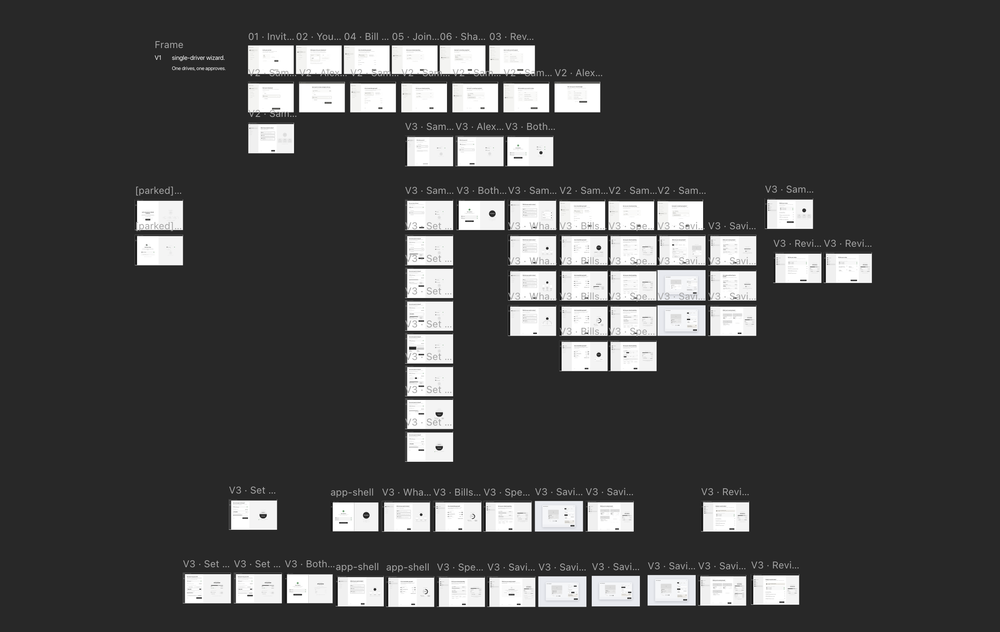
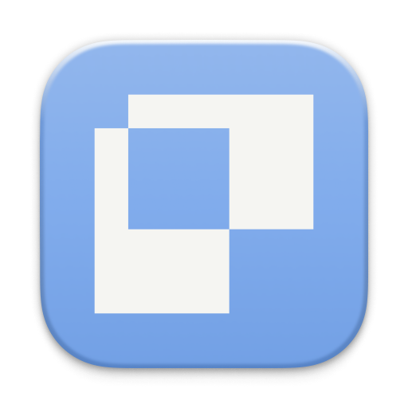

01 — Overview
A shared bank for couples.
This is a concept project: a bank for couples who share their finances. I didn't design the whole application — I designed one flow, the shared setup: the couple decides what each partner contributes, which bills the shared pot covers, how spending is split into cards, and what they're saving for. It's the flow where all the real decisions live, so it's where the design problem is.
The process, briefly: desk research first, distilled into five constraints that guided the design decisions. Then flow explorations and lo-fi wireframes, a coded prototype, and a moderated usability test. Only after that came the visual identity and the final coded UI — which is embedded further down, live.
02 — Research
Five constraints I designed against.
I started by writing research questions to organise the research, aiming to cover every aspect of the product: how do couples actually organise their money — what's shared, what's kept separate? What happens when incomes are unequal? Why do money fights start, and what are they really about? What makes saving together work?
With those questions set, I did a round of desk research — existing studies on couples and money, plus the behavioural economics behind spending and saving. From the findings I distilled five constraints. Not hard rules, but things I kept with me throughout the project — they guided the product decisions from here on.
- 01Boundary. Couples want partial transparency, not full. What's shared is visible to both; what's personal stays private. So nothing is ever defaulted into the shared layer — every shared item is an active choice.
- 02Fairness. The harm from unequal income isn't the gap, it's the unspoken meaning. Contribution has to be explicit, agreed, and proportional to income — never an assumed 50/50. This is the product's sharpest differentiator: the Icelandic incumbent only offers 50/50.
- 03Mental load. The partner who manages the money carries stress nobody consciously handed them. Automate the execution, and surface decisions as shared, so the admin is distributed rather than dumped on one person.
- 04Goals. Shared goals motivate more than private ones, and visible progress sustains them. Saving has to feel motivating, not like filling in a form — named pots, a picture of what you're saving toward, progress both partners can see.
- 05Couple-first. Every existing tool treats a couple as two individuals. Here the shared pot is the primary concept and setup is a joint act — neither partner's experience is the secondary one.
03 — Finding the flow
Finding the flow.
This phase was done with two tools: Claude Code and Paper. I started by talking the problem through with Claude Code — what does a couple actually need to decide to set up shared finances, and in what order? Out of those conversations came a base flow: set your contribution, then walk through what the pot covers — bills, spending, savings — and review it together at the end.
Then came the iteration, in Paper. For each step of the flow I spun up a lot of ideas — different layouts, different framings of the same question, different ways a screen could work — as quick grayscale wireframes, side by side on one canvas. Three whole directions came and went: one partner setting everything up and the other approving, a turn-based version, and finally the one I committed to — both partners set their own contribution, then move through the setup together.


That committed flow is the one that carried through to the end: contribution → what's coming → bills → spending → savings → review.
04 — Prototype and testing
What testing changed.
I built a working coded prototype of the full setup flow and ran a moderated, think-aloud usability test — real people, realistic tasks, watching without helping. Some things landed. The ones that didn't were more useful. A few clear patterns came out of it:
- 01The contribution screen led with "what stays personal." People read it as the app trying to take their money. Fix: reframe it as "your contribution to your shared pot" — lead with what you're building together, not what you're giving up.
- 02The "what to share" screen looked like a set of switches, so people treated it as the place to opt in and got confused when choices reappeared later. Fix: turn it into an orientation step — here's what's coming — not a decision point.
- 03Auto-paying bills from the shared pot felt like something the app decided for them. Fix: make auto-pay explicitly opt-in, per bill. It satisfies Boundary and it stopped feeling presumptuous.
- 04The savings model had a "catch-all" account that everything fell into. Testers couldn't explain what it was. Fix: kill the concept. A plain base savings account holds the money, and goal accounts spin off it — whatever isn't assigned to a goal simply stays in the base.
What worked
- Proportional contribution was immediately understood and quietly appreciated — nobody wanted 50/50.
- The evolving "shared pot" summary that fills in as you go gave people a clear sense of progress.
- Saving-first genuinely felt good — the moment you lock in savings was the emotional high point.
What broke
- Framing that led with sacrifice ("what stays") read as the bank taking, not the couple building.
- Anything that looked like a switch got treated as a decision, even when it was just orientation.
- Abstract structural concepts ("catch-all") never survive contact with a real user.
05 — Building the identity
Serious enough for your salary, human enough to want.
Only now — with the flow tested and settled — did colour and brand appear. A bank you trust with your salary has to feel calm and solid; a product about a shared life shouldn't feel like a spreadsheet. The direction I landed on I think of as atmospheric glass.
A single photograph — a soft meadow-and-sky — sits blurred behind the entire app, under a white veil that acts as a brightness dial. Frosted-glass cards and a frosted nav rail float on top of it. The whole thing feels like it's lit from behind rather than painted on.
The accent is a soft sky-blue pulled straight out of that photo, used as a grained gradient rather than a flat fill — so it reads as a material, not a swatch. Savings gets its own sage-green. Type is Inter, treated with its OpenType features switched on for a quieter, more deliberate feel. Light is the default; dark mode swaps in a night photograph and a deeper accent rather than just inverting the colours.
06 — Final design
The final design.
Everything below is the real, coded product — not screenshots. The whole setup flow is embedded here, playable start to finish; the screens after it are that same live UI, each held on the moment that carries the most design thinking.
Try it yourself.
Walk the full flow below — set a contribution, choose bills, split spending, name a savings goal. Or open it full screen.
Contribution — proportional, and private.
Setup opens on the one decision that matters most. You set your own contribution to the shared pot — as a share of your pay or a fixed amount — and your partner sets theirs. Neither of you sees the other's salary, only what each puts in. Fairness made visible, Boundary preserved.
Spending — but savings first.
This is the inverted step. Before a single spending card is set, you lock in what you'll save. The bar splits savings from spendable, and only then do the named spending cards — each a real virtual card — divide up what's left. Savings holds its ground while the rest gets allocated — that's the whole point.
Savings — a base account, and goals worth picturing.
The saved amount lands in a plain base account. From there you spin off goal accounts — a home deposit, a trip — each taking a fixed monthly amount, with an optional target and a photo of the thing itself. A targeted goal fills, then quietly hands its monthly amount back to the base. Interest is shown as an effect, not a headline.
Review — the whole picture, agreed.
The last step gathers every decision into one calm summary — contribution, bills, spending, savings — ready to save and send to your partner. The right-hand "shared pot" panel that's been filling in the entire way through is complete here. Nothing on this screen is new; that's the point. You're confirming choices you already made together, not discovering them.
Dark mode.
Dark mode was part of the system from the start — a dedicated night photograph behind the glass and a deeper accent, rather than a mechanical invert.